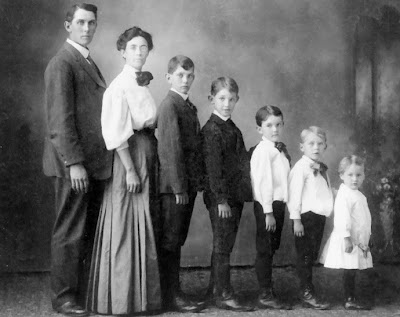

A Mirror Fashion é a maior empresa de comércio eletronico no segmento
de moda em todo o mundo. Fundada em 1932, possui filiais
em 124 paises, sendo líder de mercado com mais de 90% de participação em 118 deles.
Nosso centro de distrinuições fica em Jacarezinho no Paraná . De lá, saem 48 aviões que distribuiem nossos
produtos às casas deo mundo todo. Nosso centro de distribuição:
Centro de distribuição da Mirror Fashion
Compre suas roupas e acessorios na Mirror Fashion. Acesse nossa loja ou entre em contato se tiver dúvidas.
Conheça também nossa história e nossos diferenciais.
História

familia Pelho
A fundação em 1932 ocorreu no momento da descoberta econômica do interior do Paraná. A familia Pelho, tradicional
da região, investiu todas as suas economias nessa nova iniciatiava, revolucionária para a época. O fundador
Eduardo Simões Pelho, dotado de particular visão administrativa, giou os négocios da empresa durante
mais de 50 anos, muitos deles ao lado de seu filho E. S. Pelho Filho, atual CEO. O nome da empresa é
inspirado no nome da familia.
O crescimento da empresa foi praticaamente instantaneo. Nos primeiros 5 anos, já atendia 19 paises. Bateu a marca
de 100 paises em apenas 15 anos de existencia. até hoje, já atendeu 740 milhes de usuarios diferentes, em
bilhões de diferentes pedidos.
O crescimento em numero de funcionarios é tambem assombroso. Hoje, é a maior empregador do Brasil, mas mesmo após
apenas 5 anos de sua existencia, já possuia 30 mil funcionarios. fora do Brasil, há 240 mil funcionarios, além
dos 890 mil brasileiros nas instalações de Jacarezinho e nos escritorios em todo pais.
Dada a importancia economica da empresa para o Brasil, a familia Pelho já recebeu diversos premios, homenagens e condecorações. Todos os presidentes
do Brasil já visitaram as instalações da Mirror Fashion, além de presidentes da união Europeia, Asia eo secretario-geral da ONu.
Diferenciais
Menor preço do varejo, garantido
Se você achar uma loja mais barata, leva o produto de graça